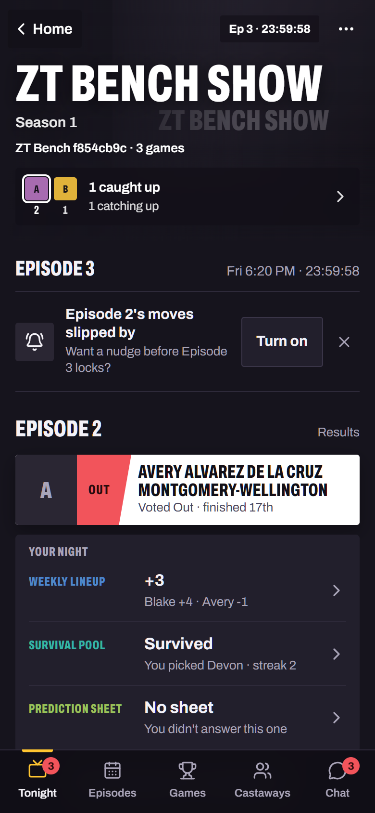
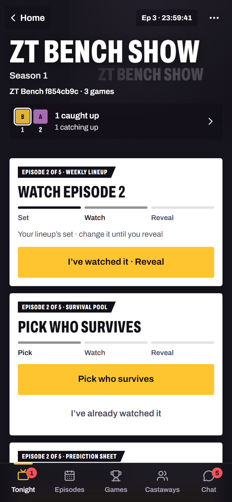
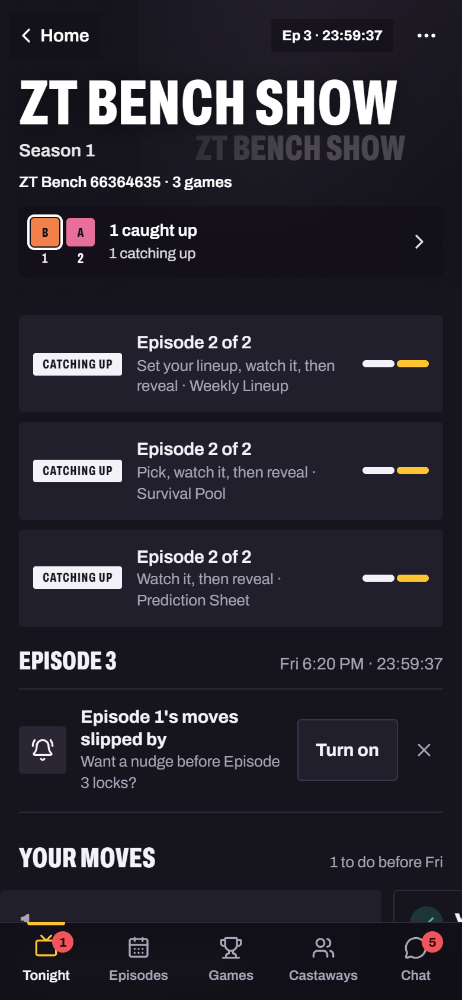

Ann· Tonight · This checkout

No sideways scrollChoices read differentlyEvery control namedNo failed reads
This checkout(:3000)

No sideways scrollNo failed reads
reactions(:3009)

No sideways scrollNo failed reads
Same case, person, screen and step on both. Each side has its own copy of the data, so a save on one never reaches the other.
Step 9 of 9
Bo· Tonight · This checkout
No sideways scrollNo failed reads
This run can't open in the shared runtime yet
It was saved by the old recipe bench, after the fact: its game was stored as it stood, not as a definition plus the actions that led there.
- Needs: loading a saved game state as setup (planned: snapshot reconciliation)
- Nothing was generated in its place, and the previous screens were closed so they can't be mistaken for this run.